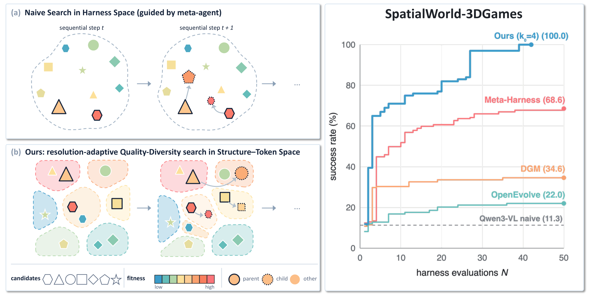

A harness gets coordinates.
Its component graph becomes a structural descriptor, its code a token descriptor. One k-means over a corpus of harness variants turns the joint space into k₀ Voronoi cells.
Carnegie Mellon University
Preprint · 2026
01The idea

How can we efficiently search for a diverse set of high-quality harnesses under a tight evaluation budget?
A meta-agent that rewrites the harness from execution feedback works, but each candidate costs minutes to hours of rollouts, and in a space with no coordinates a search step has no size and a search trajectory has no coverage. Naive search drifts along a few lineages and spends its budget blind.
Give every harness coordinates, then search the map at the resolution the data asks for.
Harness-MAP factorizes a candidate into its program structure (the component graph) and its token-level implementation, keeps the best harness of every cell of that structure-token map, and adapts the map while searching: cells whose members' fitness spreads are sub-split, refinements that do not pay are retracted. Budget concentrates where finer resolution has produced gains.
No weights are trained for any number on this page. The policy model is the same frozen Qwen3-VL-30B-A3B-Instruct throughout, and the search edits only the harness around it: the prompts it reads, the tools it may call, the memory it keeps and the control flow that connects them.
Automating harness evolution via naive meta-agent search is prohibitively expensive, requiring hundreds of meta-agent calls and minutes-to-hours per evaluation. How can we efficiently search for a diverse set of high-quality harnesses under a tight evaluation budget? To address this, we introduce Harness-MAP to structure the search space, factorizing graph-level program structures from token-level implementations. Bilevel search over this structure-token representation space illuminates an archive of diverse, high-quality harnesses. The map also enables a resolution-adaptive search strategy that navigates this space efficiently, sub-splitting partitions with high fitness variance while retracting ineffective refinements. Across three interactive spatial navigation benchmarks with the frozen Qwen3-VL-30B-A3B-Instruct backbone model, our search approach rapidly achieves performance leaps under minimal evaluation budgets: 10.7% → 100.0% on SpatialWorld-3dgames (39 evals), 10.0% → 90.0% on BALROG-MiniHack (41 evals), and 32.5% → 46.5% on SimWorld-Robotics (6 evals). Harness-MAP outperforms prior harness evolution methods across both search and held-out tasks, establishing factorized representations as an effective Quality-Diversity paradigm for budget-aware agent harness search.
02Method
Factorize every harness into coordinates, archive the elites across the map, and sharpen the map only where it pays.
Its component graph becomes a structural descriptor, its code a token descriptor. One k-means over a corpus of harness variants turns the joint space into k₀ Voronoi cells.
Each step selects cell elites, diagnoses their failure modes and proposes children steered toward target cells. An anti-cheat judge gates every child before it is evaluated.
The cell with the largest fitness range is sub-split at zero rollout cost. The split stays only if a child cell's elite improves; otherwise it is reverted and remembered.
Every candidate is written as H = (s, θ) with the joint descriptor φ(H) = (φS(s) ; φT(θ)). The structural descriptor reads the top-level component graph: functions, classes and modules are vertices with deterministic role labels, and call, reference and import dependencies are edges. Weisfeiler–Lehman refinement hashes each vertex's role-aware neighbourhood, and φS is the normalized histogram of those hashes, so renaming a function leaves the coordinate unchanged while adding a perception module moves it. The token descriptor concatenates standardized blocks for control-flow statistics, numeric constants and the documentation text. Pick one of four candidates from a Rubik's-cube run to see how structural and token-level edits move a harness on the map.
Standard CVT-MAP-Elites mutates blindly; a standard harness-evolution loop (propose, evaluate, diagnose, refine) has no spatial coverage. Harness-MAP runs the LLM-guided loop across the archive. Steps marked meta-agent are headless, tool-using sessions over a candidate directory; steps marked map read only the archive and cost no rollout.
The meta-agent proposes root harnesses, each checked by the validity filter, until ⌈m·k₀⌉ cells hold an evaluated founder (m = 50%).
Each step breeds from P = ⌈log₂ k₀⌉ cell elites, cycling through the occupied cells so every region keeps getting chances.
A diagnostician reads the parent's code and episode traces end to end and names the binding constraint: a harness bug, a model ceiling or a task gap.
Each of the C children gets a target cell translated into a structural or token-level directive, so siblings diverge by construction.
A child must keep the entry-point contract and pass an adversarial anti-cheat judge that rules on the mechanism in code and traces, never on the score.
The child is scored on the search split, placed in its nearest cell and kept if it is that cell's best.
Sub-split the occupied cell with the largest fitness range; keep the split only if a child cell's elite improves, else revert and remember. Zero evaluations.
A fixed grid wastes evaluations on uniform cells and lumps distinct candidates together in high-variance ones. At the end of every step Harness-MAP treats one sub-split as a local, data-driven hypothesis and tests it with the children it would have bred anyway.
Dots are evaluated harnesses placed by their coordinates, coloured by fitness; ringed dots are cell elites; dashed rings are the children bred in that step. Centroids are refit on cached descriptors, so the resolution of the archive changes without spending a rollout.
03Results
Same frozen model, same reference harness, same number of candidate evaluations for every method: N = 50 on SpatialWorld-3DGames and BALROG-MiniHack, N = 16 on SimWorld-MMNav.
The meta-agent for the main results is claude-opus-5 through the Claude Code CLI; gpt-5.6-sol through the Codex CLI is used to check robustness to the backbone. Harness-MAP uses a 50% coverage-initialization ratio and sweeps the initial resolution k₀; the bars show its best k₀ per benchmark.
| Method | SpatialWorld-3DGames SR % | SimWorld-MMNav easy Subtask SR % | SimWorld-MMNav hard Subtask SR % | BALROG-MiniHack SR % |
|---|---|---|---|---|
| Direct inference | ||||
| GPT-4o | – | 33.1 | 34.4 | 10.0 ± 4.7 |
| GPT-5 | 36.4 | – | – | 20.3 ± 7.3 |
| Qwen2.5-VL-72B-Instruct | 7.6 | 23.8 | 23.9 | 5.0 ± 3.4 |
| Qwen3-VL-30B-Instruct | 10.7 | 32.0 | 29.0 | 10.0 ± 4.7 |
| Harness search at budget N = 50 / 16 / 16 / 50 | ||||
| Meta-Harness | 68.6 | 39.0 | 46.0 | 75.0 ± 6.8 |
| GEPA | 18.6 | 41.0 | 34.0 | 30.0 ± 7.2 |
| DGM | 34.6 | 40.0 | 38.5 | 72.5 ± 7.1 |
| ShinkaEvolve | 60.6 | 40.5 | 39.0 | 20.0 ± 6.3 |
| OpenEvolve | 21.2 | 36.5 | 37.0 | 27.5 ± 7.1 |
| Harness-MAP (ours) | 100.0 | 46.5 | 55.5 | 90.0 ± 4.7 |
Under the budget-matched protocol the gains arrive early: on SpatialWorld-3DGames the k₀ = 4 run passes Meta-Harness's full-budget score before N = 10 and reaches 100% by N = 42; on BALROG-MiniHack the k₀ = 16 run reaches 90% at N = 48. Switch the axis to sequential steps T to see how much of that comes from parallel breadth, and switch the view to per game or per task to see where the search runs long. Drag the slider or press replay to watch the budget being spent.
Fixed resolution never changes the archive; hierarchical expansion walks a prepared coarse-to-fine ladder and grows the archive regardless of what the search finds; adaptive resolution sub-splits where fitness varies and retreats where a split did not pay, so it refines the map incrementally rather than exponentially.
To compare search methods with quality-diversity metrics, every candidate each method proposed on SpatialWorld-3DGames is embedded offline into the same structure-token descriptor space and mapped onto the k₀ Voronoi cells. As the grid gets finer, the baselines' local edits cover a collapsing fraction of cells, while Harness-MAP keeps coverage above 50% at every resolution and its QD-score keeps scaling.
| Method | k₀ = 2 | k₀ = 4 | k₀ = 8 | k₀ = 16 | k₀ = 32 |
|---|---|---|---|---|---|
| Baselines | |||||
| Meta-Harness | 0.93 (100%) | 1.30 (70%) | 1.46 (45%) | 2.27 (32%) | 2.20 (16%) |
| DGM | 0.96 (100%) | 1.48 (70%) | 1.62 (45%) | 2.14 (29%) | 1.97 (12%) |
| GEPA | 0.43 (100%) | 0.49 (70%) | 0.70 (57%) | 0.83 (32%) | 1.15 (21%) |
| ShinkaEvolve | 0.36 (90%) | 0.36 (50%) | 0.46 (30%) | 0.46 (20%) | 0.46 (8%) |
| OpenEvolve | 0.27 (90%) | 0.29 (55%) | 0.29 (25%) | 0.29 (15%) | 0.29 (9%) |
| Harness-MAP | |||||
| adaptive | 1.16 (100%) | 1.48 (70%) | 2.43 (64%) | 3.51 (58%) | 7.25 (57%) |
| fixed | 1.15 (100%) | 1.40 (65%) | 2.38 (55%) | 3.23 (52%) | 7.89 (52%) |
| hierarchical | 1.25 (100%) | 1.22 (65%) | 2.30 (57%) | 2.71 (42%) | 6.68 (49%) |
Crossing the two search loops with the two descriptors on SpatialWorld-3DGames (k₀ = 8) isolates the representation. OpenEvolve run over our structure-token CVT cells jumps from 21.9% to 71.4% and solves Maze and Block3D in 6 evaluations. Our loop run over OpenEvolve's two-dimensional complexity and diversity descriptor loses efficiency, 37 instead of 16 evaluations to solve Rubik, and fails to cover Maze3D.
| Method | Maze | Maze3D | Block3D | Rubik | Snake | Avg. |
|---|---|---|---|---|---|---|
| Harness-MAP loop | ||||||
| Harness-MAP, structure-token CVT | 100.0 / 10 / 1 | 100.0 / 46 / 7 | 100.0 / 10 / 1 | 100.0 / 16 / 2 | 100.0 / 10 / 1 | 100.0 |
| Harness-MAP, OpenEvolve descriptor | 100.0 / 14 / 4 | 84.0 / 23 / 4 † | 100.0 / 18 / 3 | 100.0 / 37 / 7 | 100.0 / 8 / 1 | 96.2 |
| OpenEvolve loop | ||||||
| OpenEvolve, its own descriptor | 60.0 / 37 / 36 | 20.0 / 50 / 49 | 5.0 / 50 / 49 | 15.0 / 50 / 49 | 10.0 / 50 / 49 | 21.9 |
| OpenEvolve, structure-token CVT | 100.0 / 6 / 5 | 48.0 / 50 / 49 | 100.0 / 6 / 5 | 15.0 / 50 / 49 | 100.0 / 26 / 25 | 71.4 |
† OpenEvolve's descriptor could not fill 50% of the k₀ cells on Maze3D, so this cell ran at a 25% coverage target.
Each benchmark keeps a held-out split: unseen Snake seeds, the ten unseen SimWorld maps, and for MiniHack both unseen level seeds of the eight search tasks (holdout A) and eight unseen tasks (holdout B). Harness-MAP, Meta-Harness and DGM retain 100% on Snake; the k₀ = 4 navigation harness improves from 55.0 to 60.0 subtask success on the held-out hard maps.
| Method | Snake search | Snake val | Easy search | Easy val | Hard search | Hard val | MiniHack search | Holdout A | Holdout B |
|---|---|---|---|---|---|---|---|---|---|
| Qwen3-VL-30B (no search) | 10.7 | 0.0 | 32.0 | 32.5 | 29.0 | 27.5 | 10.0 ± 4.7 | 10.0 ± 4.7 | 0.0 ± 0.0 |
| Meta-Harness | 100.0 | 100.0 | 39.0 | 40.0 | 36.0 | 37.5 | 75.0 ± 6.8 | 67.5 ± 7.4 | 72.5 ± 7.1 |
| GEPA | 10.0 | 5.0 | 41.0 | 52.5 | 33.3 | 34.0 | 30.0 ± 7.2 | 20.0 ± 6.3 | 30.0 ± 7.2 |
| DGM | 100.0 | 100.0 | 40.0 | 40.0 | 38.5 | 45.0 | 72.5 ± 7.1 | 55.0 ± 7.9 | 65.0 ± 7.5 |
| ShinkaEvolve | 8.0 | 5.0 | 40.5 | 40.0 | 34.0 | 42.5 | 20.0 ± 6.3 | 10.0 ± 4.7 | 27.5 ± 7.1 |
| OpenEvolve | 10.0 | 5.0 | 36.5 | 30.0 | 37.0 | 35.0 | 27.5 ± 7.1 | 17.5 ± 6.0 | 15.0 ± 5.6 |
| Harness-MAP k₀ = 2 | 100.0 | 100.0 | 46.5 | 35.0 | 38.0 | 32.5 | 75.0 ± 6.8 | 57.5 ± 7.8 | 62.5 ± 7.7 |
| Harness-MAP k₀ = 4 | 100.0 | 100.0 | 44.0 | 50.0 | 55.0 | 60.0 | 85.0 ± 5.6 | 70.0 ± 7.2 | 57.5 ± 7.8 |
| Harness-MAP k₀ = 8 | 100.0 | 100.0 | 45.5 | 45.0 | 41.0 | 25.0 | 82.5 ± 6.0 | 75.0 ± 6.8 | 60.0 ± 7.7 |
| Harness-MAP k₀ = 16 | 100.0 | 100.0 | – | – | – | – | 90.0 ± 4.7 | 72.5 ± 7.1 | 47.5 ± 7.9 |
| Harness-MAP k₀ = 32 | 100.0 | 100.0 | – | – | – | – | 40.0 ± 7.7 | 35.0 ± 7.5 | 50.0 ± 7.9 |
04Evolution packs
The best run on each benchmark, laid out harness by harness, with the episodes those harnesses played.
The code release ships the paper's best run on each benchmark: the anchor, then every harness the run evaluated until the best score was first reached, each with the proposer's notes and the diagnostician's report, plus videos of the episodes those harnesses played. The charts below plot every evaluated harness in evaluation order, with the ancestry of the best harness highlighted. Click a harness to watch the episode it played.
The best MiniHack run (adaptive, k₀ = 16, 48 evaluations) evaluated 41 harnesses before reaching success 0.900 at evaluation 41. The path to the best is four harnesses long. The anchor (0.100) is BALROG's naive agent in the harness layout. cand_r35_0 (0.150) moved the decision from a per-turn model call to an in-episode value learner that asks the model only to break ties. cand_r41_0 (0.375) put a per-level chart with a BFS router in front of the learner. cand_r68_0 (0.900) rewired the learner onto an ordered stage table with tool owners for the Quest and Sokoban tasks and a frontier attractor in the router, edits the proposer was steered toward from two sibling cells.
Every harness above on MazeWalk-15x15 episode 00, the episode that separates the anchor from most of its descendants. Episodes are replayed in the MiniHack engine from the logged seed and action sequence, with the action, the agent's reasoning tag and the game message beside the map; every replay was checked step by step against the text observations the agent saw.
Anchor top left, best bottom right, on the episode each task family was first unlocked by: MazeWalk-15x15, Corridor-R3 (first solved by cand_r35_0), Boxoban-Medium and Quest-Easy (first solved by cand_r68_0).
One adaptive run per game from the Claude-CLI sweep, laid out until the first harness that solved every level. Maze3D-Pro is the game with a real search: the anchor solves 2 of 25 levels and twelve proposals follow before cand_r6_1 solves all 25. Maze, Block3D and Snake saturate within the first few evaluations. The engine records every episode; each video is one level that the anchor fails and the best harness solves, so what changes between the videos is the sequence of decisions.
k₀ = 2 · 13 harnesses · score 1.0 first reached at evaluation 13 · level 7 shown (horizon 100 steps)
k₀ = 32 · 4 harnesses · score 1.0 first reached at evaluation 4 · level 12 shown
k₀ = 8 · 2 harnesses · score 1.0 first reached at evaluation 2 · level 1 shown
k₀ = 2 · 2 harnesses · score 1.0 first reached at evaluation 2 · seed 20 shown · the five held-out seeds are also solved
k₀ = 2 · 3 harnesses · score 1.0 first reached at evaluation 3 · no engine recordings survive for this run, so the pack has no videos
05Citation
@article{yuan2026harnessmap,
title = {Harness-MAP: Budget-Efficient Harness Search via Structure-Token Factorization},
author = {Yuan, Mei and Chang, Yingshan and Fried, Daniel and Bisk, Yonatan},
journal = {arXiv preprint},
year = {2026}
}